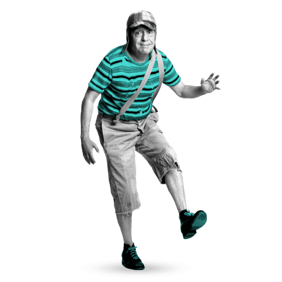
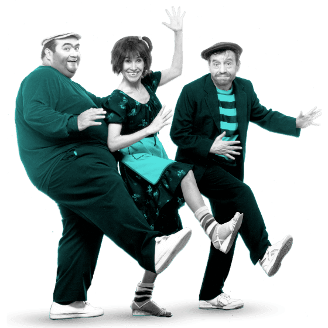

Dr. Chapatín
Fue uno de los primeros personajes populares, apareciendo en 1968 en Los supergenios de la mesa cuadrada.

El Chavo del 8
Inicialmente, el personaje apareció en sketches de 10 minutos en el programa Chespirito en 1971, convirtiéndose en una serie propia en 1973.

Los Chifladitos
Aparecieron inicialmente en 1971 y luego fueron revividos en 1980.

Los Caquitos
El Chómpiras y Peterete aparecieron en la primera época del programa "Chespirito" (1970-1973), luego Botija y Chimoltrufia reemplazaron a Peterete y se unieron a la segunda época de "Chespirito" (1980-1995).